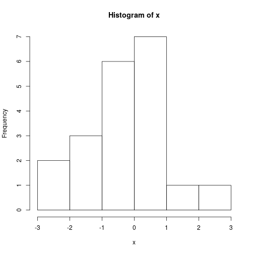

<div class="chunk" id="unnamed-chunk-1"><div class="rcode"><div class="source"><pre class="knitr r">  <span class="hl kwd">cat</span><span class="hl std">(</span><span class="hl str">&quot;Orden de R\n&quot;</span><span class="hl std">)</span>
</pre></div>
<div class="output"><pre class="knitr r">## Orden de R
</pre></div>
<div class="source"><pre class="knitr r">  <span class="hl std">x</span> <span class="hl kwb">=</span> <span class="hl kwd">rnorm</span><span class="hl std">(</span><span class="hl num">20</span><span class="hl std">)</span>
  <span class="hl kwd">hist</span><span class="hl std">(x)</span>
</pre></div>
</div><div class="rimage default"></div></div>
